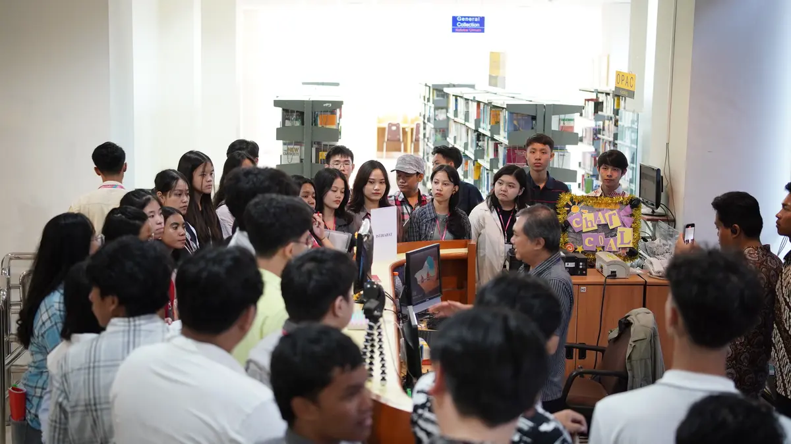
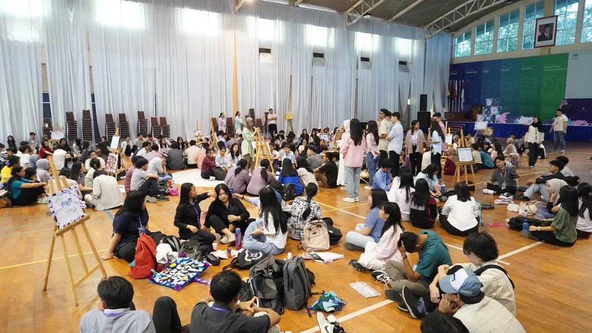
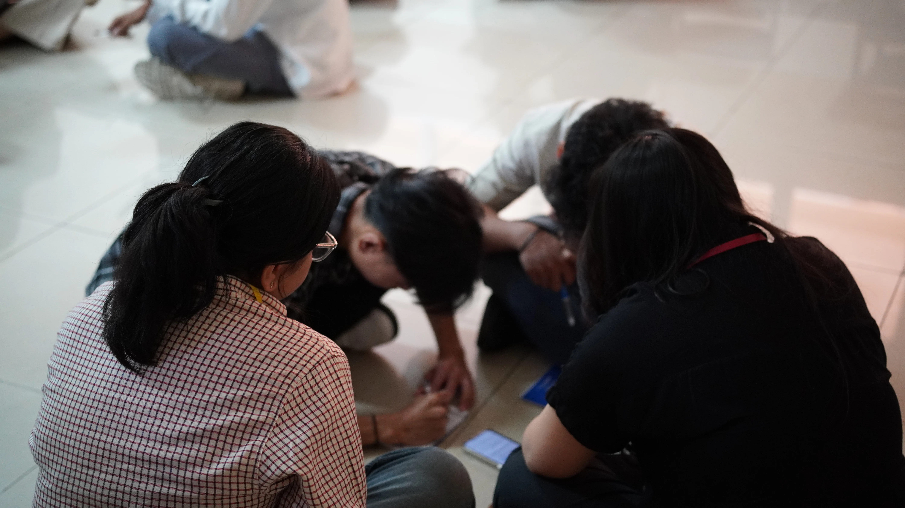

MCF bukan sekadar orientasi. Ada 9 kegiatan yang dirancang agar mahasiswa baru siap memulai perkuliahan.
Ma Chung Festival (MCF) adalah program orientasi tahunan Universitas Ma Chung. Selama kurang lebih satu minggu, mahasiswa baru mengikuti serangkaian kegiatan, mulai dari pengenalan kampus hingga malam penutupan di akhir semester.
Setiap kegiatan memiliki tujuan yang berbeda, tapi semuanya bermuara pada satu hal: agar mahasiswa baru merasa nyaman dan siap memulai kuliah.
Tahun Penyelenggaraan
Mahasiswa Baru
Jenis Event
Program Studi
MCF punya tiga fokus utama yang berjalan dari hari pertama hingga malam penutupan.

Membantu mahasiswa baru mengenal cara kerja kampus, mulai dari sistem akademik hingga fasilitas yang tersedia.

Mengenal mahasiswa dari program studi lain. Pertemanan yang terjalin di MCF sering menjadi ikatan yang bertahan selama masa kuliah.

Sejumlah kegiatan berfokus pada nilai-nilai yang dijunjung Universitas Ma Chung, disampaikan melalui aktivitas langsung, bukan sekadar ceramah.